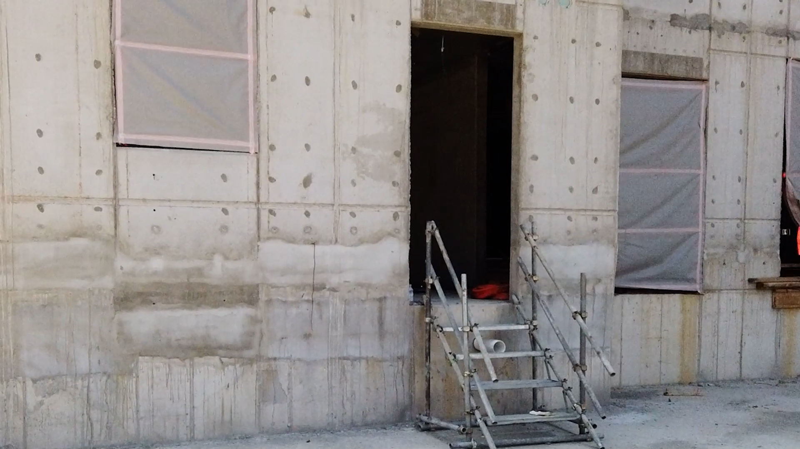

실시간 CCTV 영상 분석
YOLOv11n-Pose
ByteTrack
CPU/GPU 노트북

자연재해 실시간 모니터링
기상청 API · 30초 주기
🌍 지진
정상
M 0.0
최근 감지 없음
💨 강풍
주의보 임박
12.3m/s
기준 14m/s까지 1.7
🌧 호우
정상
0.0mm
철골기준 1mm/h
🌡 기온
정상
18°C
정상 작업 가능
기상청 특보 API
기상청 지진 API
초단기예보 API
KOSHA 법령 DB
AI Agent 통합 판단 흐름
LangGraph 1.0
Ollama 로컬
👁 감지
YOLOv11n-Pose
ByteTrack
ByteTrack
→
🧠 판단
LangGraph +
Qwen2.5-14B
Qwen2.5-14B
→
📚 RAG 조회
bge-m3 +
ChromaDB
ChromaDB
→
⚡ 대응
EXAONE-3.5
보고서 생성
보고서 생성
AI 모델 스택 (개인 노트북 최적화)
전체 로컬 실행
Vision · 객체 감지 + 자세 분석
YOLOv11n-Pose
2.9M params · ~6MB · ONNX/TensorRT
사람 감지 + 17개 관절 추출 → 쓰러짐·위험자세 판단
CPU 노트북
15-25 FPS
Tracking · 다중 객체 추적
ByteTrack
Ultralytics 내장 · 추가 모델 불필요
작업자 ID 부여 + 위험구역 체류시간 측정
오버헤드
+1-2ms
Vision · 안전장비 감지 (파인튜닝)
YOLOv11n 커스텀
AI Hub 데이터로 파인튜닝 · ~6MB
안전모 · 안전조끼 · 안전화 착용 여부 감지
목표 mAP
≥ 0.75
Agent · 의사결정 오케스트레이션
LangGraph 1.0
상태머신 + 체크포인트 + Human-in-the-loop
위험도별 분기 처리 · 도구 호출 · 실패 복구
레이턴시
~50ms
LLM · 위험도 판단 + RAG 추론
Qwen2.5-14B-Instruct
14B 파라미터 · ~8GB (Q4) · Ollama + Google Colab Pro
한국어 우수 · Google Colab Pro 연결로 추론 처리
추론 속도
30-50 tok/s
RAG · 임베딩 (법령 문서 검색)
bge-m3
567M params · ~1.1GB · 한국어 최상위
중대재해법·산안법·KOSHA 가이드 임베딩
차원
1024d
RAG · 벡터 데이터베이스
ChromaDB
SQLite 기반 · 설치 1줄 · 로컬 운영
법령 청크 ~2,000개 저장 · k=5 검색
검색 속도
< 50ms
Report · 산업재해조사표 자동 작성
EXAONE-3.5-2.4B
2.4B params · ~1.5GB (Q4) · LG 한국어 특화
6하원칙 작성 · 재발방지 계획 · 법령 매핑 (한국어 보고서 최강)
생성 시간
~15초
Report · 노동부 양식 PDF 변환
Jinja2 + WeasyPrint
템플릿 엔진 + HTML→PDF · AI 모델 X
별지 제30호 산업재해조사표 양식 매핑 · 워터마크 포함
변환 시간
< 2초
📊 노트북 리소스 사용량 (예상)
전체 디스크
~5.2 GB
RAM 사용
~6 GB
권장 사양
RAM 16GB
GPU
선택 (CPU 가능)
실시간 이벤트
강풍주의보 임박
14:32:00
산안규칙 제37조
위험구역 진입 감지
14:32:07
중대재해법 제4조
사다리·낙하위험
14:31:55
산안법 제38조
안전모 미착용
14:30:44
산안법 제32조
RAG 법령 챗봇
bge-m3 + Qwen2.5-14B
강풍 시 크레인 작업 기준은?
산안규칙 제37조②에 따라 순간풍속 10m/s 초과 시 타워크레인 설치·해체를, 15m/s 초과 시 운전 작업을 중지해야 합니다. 현재 12.3m/s로 설치·해체 작업 중지가 필요합니다.
📄 산안규칙 제37조 · 제383조
🔤 bge-m3 임베딩
🗄 ChromaDB top-5
🧠 Qwen2.5-14B 생성
위험성평가 (KOSHA)
검토 필요
위험구역 진입
매우높음
강풍 시 크레인
높음
사다리 미고정
보통
안전모 미착용
보통
자동 보고서
EXAONE-3.5
산업재해조사표
별지 제30호 · 자동 생성
보고 일시
2026.05.14 14:32
안전 위반
7건
자연재해
강풍주의보
작업 중지
크레인 2기
관련 법령
산안규칙 제37조